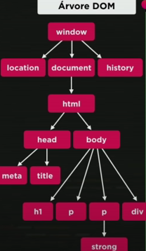
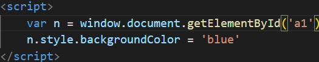

Árvore DOM
JavaScript pode alterar o conteúdo HTML
Um dos muitos métodos JavaScript HTML é getElementById()
Alguns exemplos
Aqui vai o resultado
Aprendendo a usar o DOM em JavaScript.
Clique em mim

JavaScript pode alterar o conteúdo HTML
Um dos muitos métodos JavaScript HTML é getElementById()
Aqui vai o resultado
Aprendendo a usar o DOM em JavaScript.